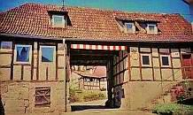
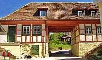
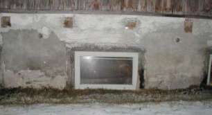
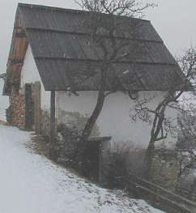
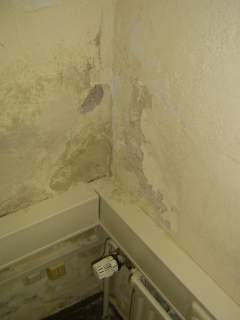
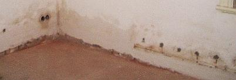
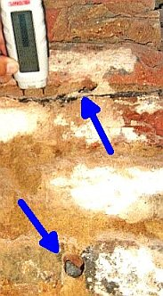
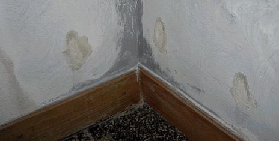

bausubstanz 7/98: Konrad Fischer:
"Maßgebend für den Grad der Durchfeuchtung ist die Saugfähigkeit, also das Porengefüge der verwendeten Baustoffe.
Da die Feuchtigkeit immer
aus den grobporigen in die feinporigen Schichten dringt (nie umgekehrt),
ist es von Belang, wie die Poren zueinander liegen."
- so Heinrich Schmitt in: Hochbaukonstruktion, Die Bauteile und das Baugefüge, Grundlagen des heutigen Bauens, Fünfte Auflage 1974, S. 34. Das gilt auch im historischen Mauerwerk! Wie liegen nun dort die Poren zueinander?
Auf der Bodensohle wurde das Fundament- und Sockelmauerwerk regelmäßig aus recht festen, also dichten, feinporigen Natursteinen errichtet. Die Bindung brachte grobporiger Kalkmörtel, meist nur sparsam verwendet. Die unvermörtelten Bereiche der "Trocken"-Fundamentmauer und der nahezu unüberwindliche Kapillarwiderstand am Übergang vom feinporigen Stein in den grobporigen Mörtel wirken kapillarbrechend. Über dem Sockel kam die Außenwand aus Natursteinen oder Ziegel, oft mit weniger dichter Porenstruktur als die Fundamentsteine. So errichteten die alten Baumeister Gemäuer, die der aufsteigenden Feuchte ganz im Sinne der obigen Lehrbuchaussage wenig bzw. keine Möglichkeiten boten. Ab dem 19. Jh. ging dieses Fachwissen leider verloren, der Einsatz von zweifelhaften Experten und Isoliermaterialien begann.
Obendrein gibt es in den feinporigen Steinen nicht die nennenswerteste - und ja berechenbare - Transportleistung für kapillares Steigen einer Wassersäule. Schon gleich nicht, wenn gar kein Wasserpegel am Fundamentfuß ansteht.
Auch der "historische" Schlagregenschutz für die Innenräume wurde oft mit einfachen Mitteln erreicht: Zweischaliges Mauerwerk mit grober Innenfüllung. Der Kapillartransport von Wasser wurde sowohl am Übergang von den feinporigen Mauersteinen zum grobporigen Kalkmörtel, wie auch zur grobporigen Kernfüllung sicher unterbunden.
Diese Grundkenntnisse zum Kapillartransport nutzt man heute z.B. beim Verzicht auf nachträgliche Horizontalabdichtungen, aber auch bei der Entwicklung von Kompressenputzen. Letztere müssen ein Kapillarporengefüge aufweisen, das dem Austritt salzhaltiger Lösung aus dem alten Mauerwerk entsprechende Feinporigkeit anbietet. Auch bei Sanierputzen fällt auf, daß zunächst die Feinporen versalzen und erst dann die im günstigsten Fall gebildeten Grobporen.
Woher kommen nun die berüchtigten Sockelputzschäden und Kellerfeuchten, vereinfachend einer "aufsteigenden" Feuchte zugewiesen (wohl immer ohne Nachweis eines gem. Kapillarporenanalyse der Baukonstruktion berechneten Kapillartransports oder gar eines anstehenden Fundament-Wasserspiegels)? Auf die Abstellung der Feuchtequelle kommt es ja vorrangig an, wenn der Feuchte der Garaus gemacht werden soll. Und das braucht oft kein Analysenequipment ein Transporter voll, und eben auch oft keine besonders eingreifenden und superteuren Gegenmaßnahmen.
1. Mauerwerksversalzung
Die historische und moderne Nutzung bietet viele Möglichkeiten der Schadsalzbelastung historischen Mauerwerks:
- Sei es z.B. Streusalz oder früher übliche Fäkalbelastung der Straßen, Wege und Plätze,
Bei solchen Verkehrsverhältnissen auf öff. und privaten Wegen und Plätzen blieb bestimmt kein Auge und
kein Mauerfuß trocken und salpeterfrei!
 
Projektbeispiel für Entsalzung der Streusalz- und Nitratbelastung am Mauerwerk der Tordurchfahrt mit Lehmkompressentechnik auf kapillaroffener
Trennschicht (Verfahrensplanung und -betreuung: Architektur- und Ingenieurbüro Konrad Fischer, 2005) - allerdings keine
Garantie für Dauerstabilität bei neuerlicher Schadsalzbefrachtung durch den Winterstreudienst
- nachträglich durch Straßenbau oder Hofaufschüttung gewachsene Geländehöhen am Mauerfuß,
- Fäkalienbelastung durch winterliches Zusammenrücken der Haus- und Stallbewohner in heizbaren Räumen des Erdgeschosses (in
Landarztprotokollen des 19. Jhs. nachgewiesen bis zu 15 Personen, Jung- und Kleinvieh),
- sonstige Wohnstallnutzung in Land- und Ackerbürgerstädten, auch in Arbeitersiedlungen,


- Kanalrückstauereignisse mit nachbarlicher Kackbrühe knöchelhoch
im Kellergeschoß vor den Zeiten der Rückstauklappe
- Schutzraumnutzung in Not- und Kriegszeiten für die Bevölkerung, die ihr Vieh dem Feind sicher nicht
schlachtreif vor der Kirche oder Burg anpflockte, von deutschen Nachkriegsereignissen 45 aufwärts ganz zu
schweigen oder gar
- Mißbrauch von Wohn-, Lager- oder Sakralraum als Pferdestall, wie es z.B. im 30-jährigen Krieg für den
Bamberger Dom belegt ist, wobei auch Schweine, Ziegen, Hunde und Hühner bemerkenswert schadsalzbefrachtende
Fäkalien absondern,
- Pökelung oder Salzlakenkonservierung im Sauerkraut- oder Heringsfass und last but not least
- Schlachthausnutzung inkl. Gedärmreinigung in der kellerlichen Waschküche.
Weitere moderne Schadsalzquellen sind zement-, traß- und silikathaltige Baustoffe sowie viele Injektagematerialien, teils sogar "gegen aufsteigende Feuchte" erst eingebracht. Auch Bekämpfungsmittel gegen Hausschwamm sind salzhaltig, sie versuchen dessen Wasserversorgung zu unterbinden und wirken deshalb porenverstopfend.

Wenn Salz in die Mauermörtel gelangt, verengt das die Poren und erleichtert den Kapillartransport aus dem Stein. Viel wichtiger ist aber die nun erhöhte hygroskopische Wasseraufnahme. Salz lagert schon bei geringer Luftfeuchte Wasser an. Die hygroskopisch die Luftfeuchte aus der Luft anziehenden Salze gehen bei erstaunlich geringem Feuchteangebot in der Umgebungsluft / Luftfeuchtegehalt in Lösung und vermitteln dann den falschen Eindruck erheblicher Wandfeuchte.



Was soll also eine Horizontalisolierung gegen versalztes, hygroskopisch wirkendes und kondensatbelastetes Mauerwerk, eventuell durch Kanalrückstau innen oder außen wirkender Befeuchtung mit Regenwasser und/oder Schmutzwasser? Preisgünstiger, schonender, wirksamer und auch denkmalgerechter wäre eine einfach handhabbare Entsalzung des Mauerwerks mittels geeigneter Auswaschtechnik, nachrangig käme vielleicht auch eine Kompressentechnik- bzw. Opferputztechnik (mit salzaufnehmenden Kompressen (z.B. aus Methylzellulose, Buchenholzzellulose, Sprühzellulose oder Bentonit-Sand-Gemisch), mit dem dafür am besten geeigneten und möglichst kapillaraktiven Simpelmörtel (baustellengemixter Luftkalkmörtel als Kompressenputz/Opferputz) bzw. geeigneten sonstigen Kompressenmaterialien in Frage, vielleicht auch nach der vorher durchgeführten - vom durchfeuchteten Bauherren selbst mit billigstem Equipment ergebniskontrollierten, vielleicht sogar selbst durchgeführten - Entsalzungsaktion und Trockenlegung der Kanäle und Baugrube gegen unbeabsichtigtes Stauwasser - ebenfalls mit den sich als jeweils vorteilhaftestest zeigenden Trockenlegungstechniken und Abdichtungstechniken, derer es freilich so einige gibt. Je nachdem, wie sich die objektbedingten, lagebedingten, schadensbedingten und finanzierungsbedingten Verhältnisse vor Ort eben zeigen.
Allereinfachste Lösungen hätten vielleicht auch für die sieben Säulen der Schloßkapelle Callenberg bei Coburg die günstigste Lösung bieten können, die nach einem Bericht der Neuen Presse Coburg am 2.12.2006 "Diamantseile kappen Säulen in Callenberg" aufwendigst durchgesägt werden mußten. Grund "Aufsteigende Feuchtigkeit hat ... mittlerweile einigen der Säulen so stark zugesetzt, dass Teile der marmorierten und gewachsten Putz-Oberflächen bis zur Empore hinauf abplatzen konnten. Um diesen fortschreitenden Schäden Einhalt gebieten zu können, (wurde architektenseits) entschieden, die Kapillaren des Sandsteines, die für den Aufstieg des Wassers verantwortlich sind, sprichwörtlich zu kappen. ... Schon während des Schnittes wird eine Kunststoffplatte "nachgeschoben". Der Vorgang ist insofern nicht ganz unproblematisch, da aus statischen Gründen darauf geachtet werden muss, dass die Last des Gewölbes oder der Empore immer abgefangen wird." Ja, und dann soll es "etwa drei Jahre" dauern, "bis das Mauerwerk ausgetrocknet ist." Viel Glück!, möchte man da wünschen ... Ob es wohl mal Stallnutzung in der Kapelle gab? Das wäre ja die natürliche Begründung für die beschriebenen Oberflächenschäden. Deren Ursache und folgende Salpeterbelastung dann keinesfalls durch Seilsägen und Kunststoffplatten beseitigt werden können. Soll ich mir das Späßle erlauben, dort mal die Feuchte nachzumessen? Die drei Jahre sind nun ja schon lange vergangen.